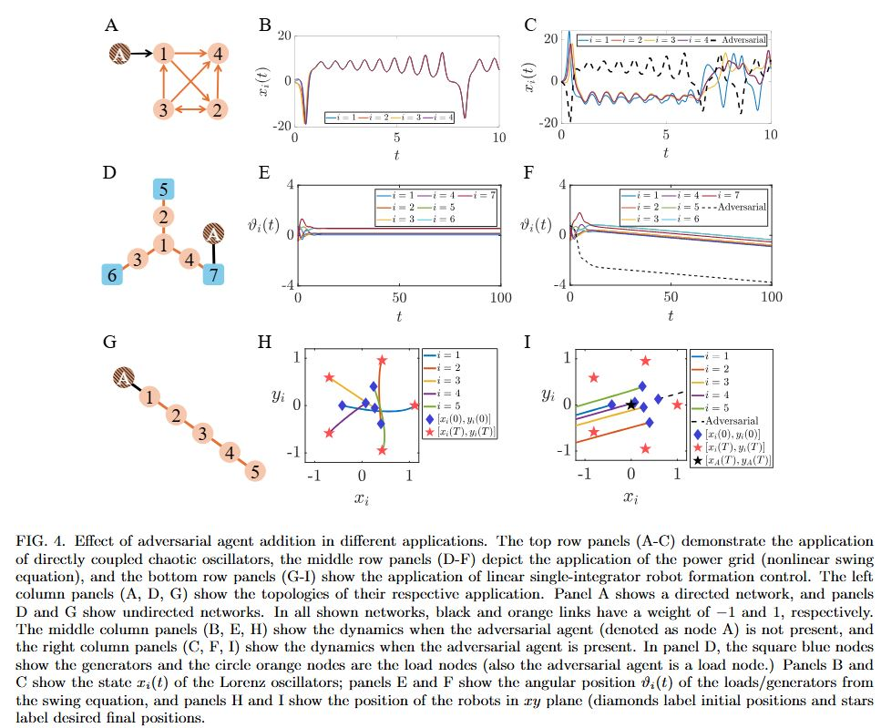
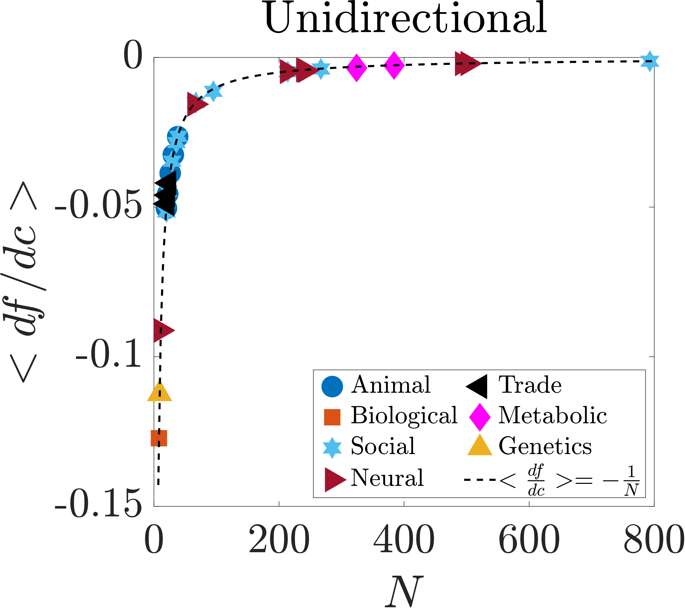
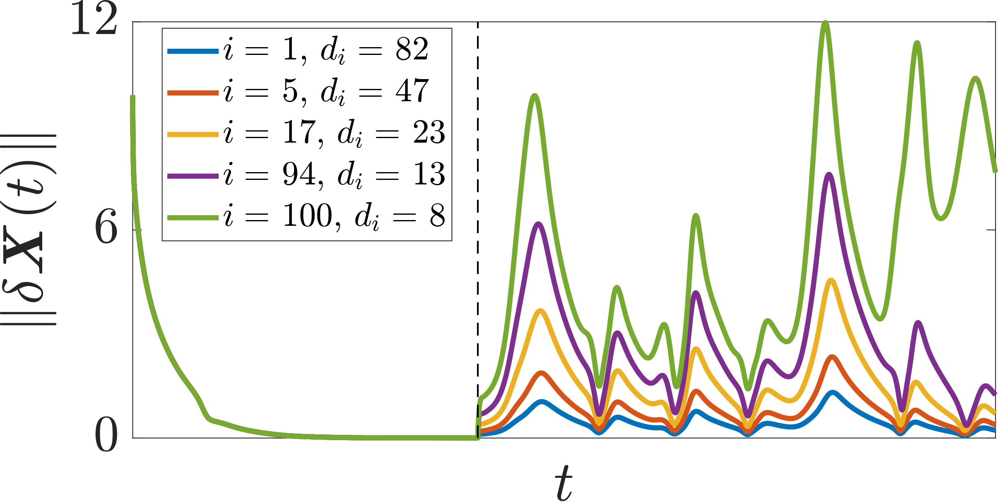

<div id="portfolio-page" class="portfolio-page-content">
    <div class="container">
        <!-- Portfolio Navigation -->
        <div class="portfolio-nav">
            <div id="portfolio-close-button" class="portfolio-close-button">
                <a href="#portfolio"><i class="fa fa-close"></i></a>
            </div>
        </div>

        <!-- Portfolio Title -->
        <div class="portfolio-title">
            <h1>Completed Research Project</h1>
        </div>

        <div class="row">
            <!-- Images / Carousel -->
            <div class="col-sm-7 col-md-7 portfolio-block">
                <div class="owl-carousel portfolio-page-carousel">
                    <div class="item">
                        
                    </div>
                    <div class="item">
                        
                    </div>
                    <div class="item">
                        
                    </div>
                </div>

                <script type="text/javascript">
                    jQuery(document).ready(function($){
                        $('.portfolio-page-carousel').owlCarousel({
                            smartSpeed: 1200,
                            items: 1,
                            loop: true,
                            dots: true,
                            nav: true,
                            navText: false,
                            margin: 10
                        });
                    }); 
                </script>
            </div>

            <!-- Project Description -->
            <div class="col-sm-5 col-md-5 portfolio-block">
                <div class="block-title">
                    <h3>Description</h3>
                </div>

                <ul class="project-general-info">
                    <li>
                        <i class="fa fa-user"></i> 
                        <strong>Collaborators:</strong>
                        <a href="https://scholar.google.com/citations?user=_oO6FPUAAAAJ&hl=en" target="_blank">Amirhossein Nazerian</a>, 
                        <a href="https://scholar.google.com/citations?user=A_Sw-MoAAAAJ&hl=en" target="_blank">Malbor Asllani</a>, 
                        <a href="https://scholar.google.com/citations?user=SNZjlSoAAAAJ&hl=en" target="_blank">David Phillips</a>, 
                        <a href="https://scholar.google.com/citations?user=Xa30RAUAAAAJ&hl=en" target="_blank">Hernan Makse</a>, 
                        <a href="https://scholar.google.com/citations?user=-pHeI6oAAAAJ&hl=en" target="_blank">Francesco Sorrentino</a>
                    </li>
                    <li>
                        <i class="fa fa-calendar"></i> July 2024 - November 2025
                    </li>
                </ul>

                <p class="text-justify">
                    Motivation: Consensus, synchronization, formation control, and power grid balance are all examples of virtuous dynamical
                    states that may arise in networks. In this research, we focused on how such states can be destabilized from a fundamental
                    perspective; namely, we aimed to address the question of how one or a few intruder agents within an otherwise
                    functioning network may compromise its dynamics. 
                </p>
                    <!--
                    <p class="text-justify"> <b>Results:</b> We showed that a single adversarial node coupled via adversarial connections to one or 
                    more other nodes is sufficient to destabilize the entire network, which we prove to be more efficient than targeting multiple nodes.
                    We also showed that concentrating the attack on a single low-indegree node induces the greatest instability, challenging the common assumption that hubs are
                    the most critical nodes. This leads to a new characterization of the vulnerability of a node, which contrasts
                    with previous work, and identifies low-indegree nodes (as opposed to the hubs) as the most vulnerable components
                    of a network. Our results are derived for linear systems but hold true for nonlinear networks, including
                    those described by the Kuramoto model. Finally, we derive scaling laws showing that larger networks are less
                    susceptible, on average, to single-node attacks. Overall, these findings highlight an intrinsic vulnerability of
                    technological systems, such as autonomous networks, sensor networks, power grids, and the internet of things,
                    with implications that extend also to the realm of complex social and biological networks.
                    </p>-->

                <!-- Software and Frameworks -->
                <div class="tags-block">
                    <div class="block-title">
                        <h3>Software and Frameworks:</h3>
                    </div>
                    <ul class="tags">
                        <li><a>MATLAB</a></li>
                        <li><a>YALMIP</a></li>
                        <li><a>MOSEK</a></li>
                    </ul>
                </div>
            </div>
        </div>
    </div>
</div>
